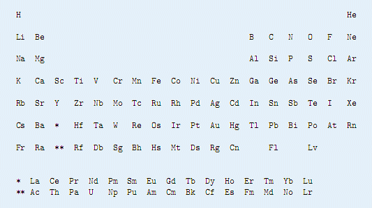

第一行T表示数据组数。
下面T行每行一个字符串，表示大伟询问的词语。长度不超过5W
一个化学家，他对化学的无比狂热使得他认为自己说的每一句话都应该由元素名称组成的，例如：“I Am CLaRa”（I是碘，Am是镅，C是碳，La镧，Ra是镭），“InTeRnAtIONAl”。但是有些词他是不能说的，例如“collegiate”, “programming” and “contest”。

现在给你一些单词，希望你确定这些单词是他是否能说，如果能输出YES，不能输出NO。
第一行T表示数据组数。
下面T行每行一个字符串，表示大伟询问的词语。长度不超过5W
T行，每行为YES或者NO。
4
international
collegiate
programming
Contest
YES
NO
NO
NO
附录
"H","He","Li","Be","B","C","N","O","F","Ne","Na","Mg","Al","Si","P","S","Cl","Ar","K","Ca","Sc","Ti","V","Cr","Mn","Fe","Co","Ni","Cu","Zn","Ga","Ge","As","Se","Br","Kr","Rb","Sr","Y","Zr","Nb","Mo","Tc","Ru","Rh","Pd","Ag","Cd","In","Sn","Sb","Te","I","Xe","Cs","Ba","Hf","Ta","W","Re","Os","Ir","Pt","Au","Hg","Tl","Pb","Bi","Po","At","Rn","Fr","Ra","Rf","Db","Sg","Bh","Hs","Mt","Ds","Rg","Cn","Fl","Lv","La","Ce","Pr","Nd","Pm","Sm","Eu","Gd","Tb","Dy","Ho","Er","Tm","Yb","Lu","Ac","Th","Pa","U","Np","Pu","Am","Cm","Bk","Cf","Es","Fm","Md","No","Lr"
保证T<=100，每行不超过5万个字母。
有多组测试数据。